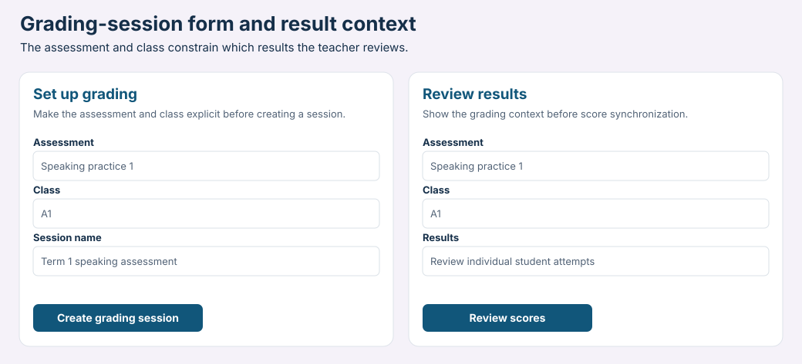
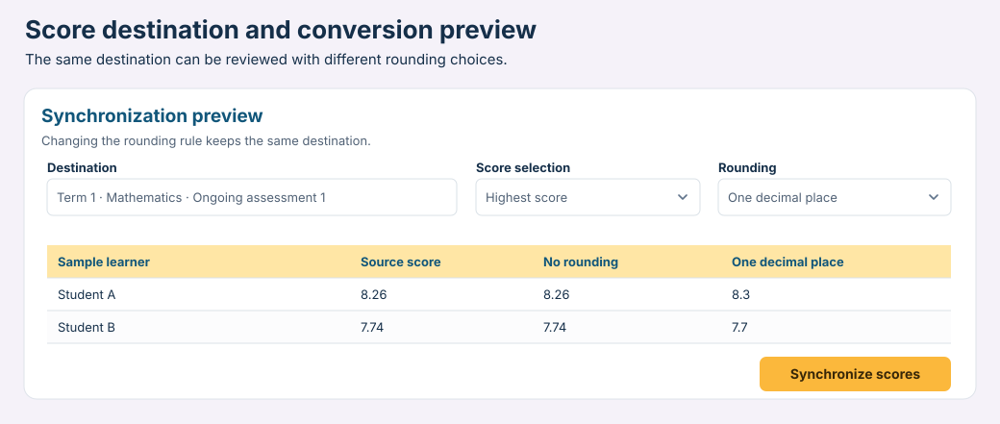
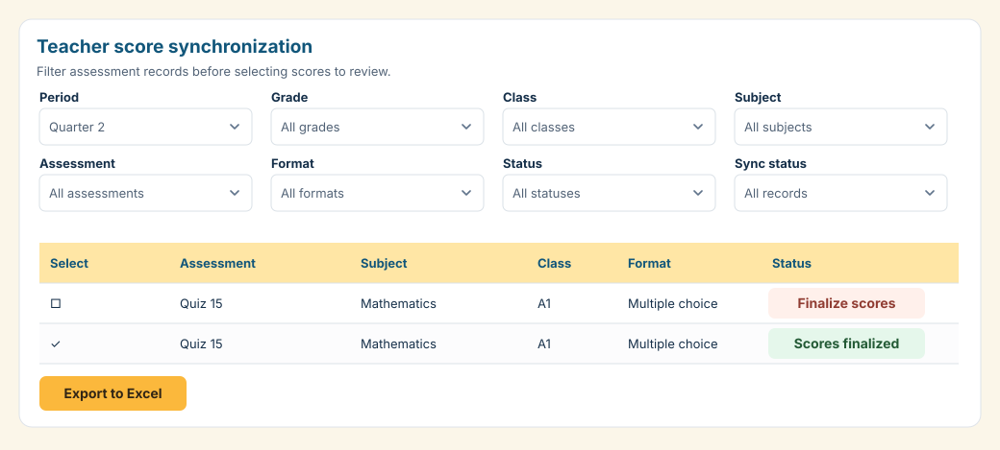
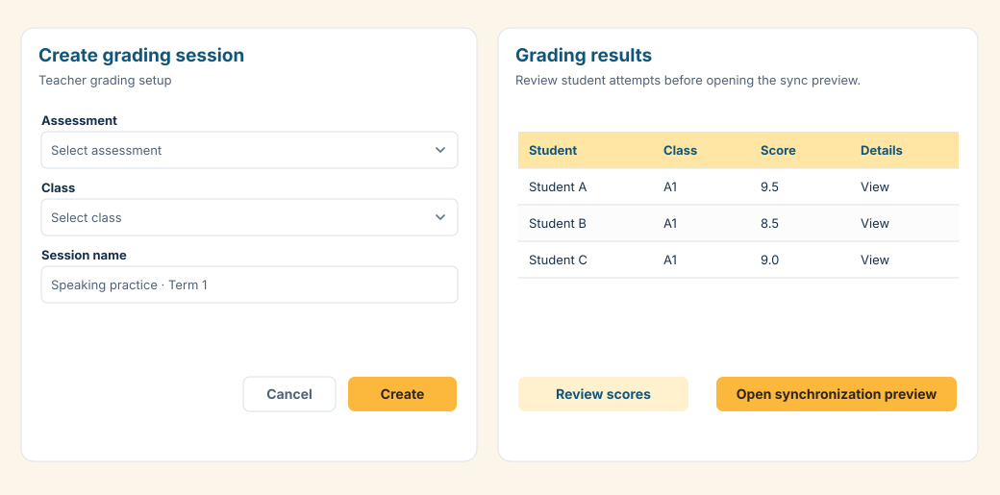
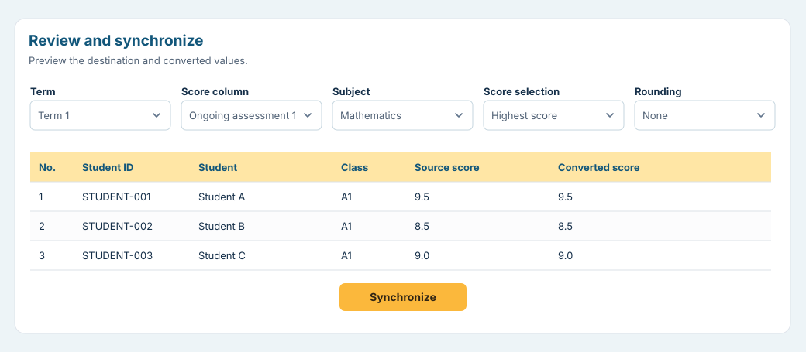
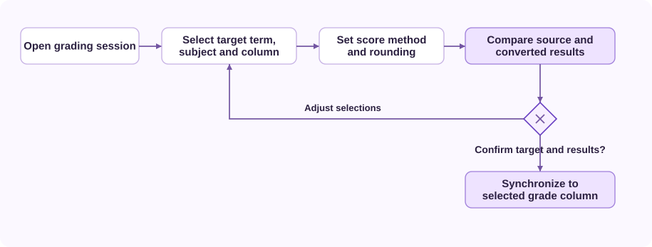

Who uses this product
TEST360 separates the learner’s attempt from grading and gradebook operations.
| Role | What they do | What the interface must support |
|---|---|---|
| Student | Completes a speaking activity and uses the student-facing result views. | Attempt and student information screens. |
| Teacher | Sets up the grading session, inspects results and checks score conversion. | Grading controls, statistics and a separate synchronization preview. |
From assessment attempt to gradebook
The Figma page contains teacher grading sessions, student result details and transfer to the gradebook. The student’s attempt and the teacher’s grade synchronization sit in distinct views.
Review conversion before synchronizing
The teacher chooses the term, target column, subject, score-selection method and rounding. The grid displays source and converted scores before the sync action. Validation can compare different methods and rounding against the same inputs and verify the mapped destination.
Figma designs and handoff
My Figma contribution
I contributed to the design of the assessment workflow. The grading-session screens establish the assessment and class, while the synchronization preview exposes the mapped term, subject and column. The side-by-side results let teachers review conversion and rounding before committing.
Try the Figma component states
Compare rounding choices with a fictional score. The preview shows the effect before synchronization. This browser example is based on the Figma design.
Mathematics · Ongoing assessment 1
- Source score
- 8.26
- Preview score
- 8.26
Mathematics · Ongoing assessment 1
- Source score
- 8.26
- Preview score
- 8.3
Mathematics · Ongoing assessment 1
- Source score
- 8.26
- Preview score
- 8
From design to implementation
These English implementation boards show how requirements change the screen, its state or the next action.

The assessment and class constrain which results the teacher reviews.

The same destination can be reviewed with different rounding choices.
The gallery uses English labels. Adapted screens follow the source Figma layouts and use fictional records. Select an image to inspect it at full size.
Grading and synchronization

The teacher can filter assessments and use row selection and status badges to distinguish records at different stages.

The grading session identifies the assessment and class before the teacher reviews individual scores.

The teacher checks five mapping controls and compares source and converted scores before committing. The sample uses fictional student data.
| Figma pattern | What the source shows | Handoff decision |
|---|---|---|
| Grading-session dialogue | The assessment board shows exam, class and session-name controls. | Identify the grading context before retrieving or working with results. |
| Synchronization selectors | The preview contains term, target score column, subject, score selection and rounding. | Treat the destination and calculation method as distinct decisions. |
| Source and converted score table | The Figma frame displays source and converted results side by side. | Let the teacher inspect the proposed mapping before synchronizing. |
Workflow · review and synchronize converted scores

The preview lets the teacher check target term, subject and column alongside the effect of calculation and rounding before synchronization.